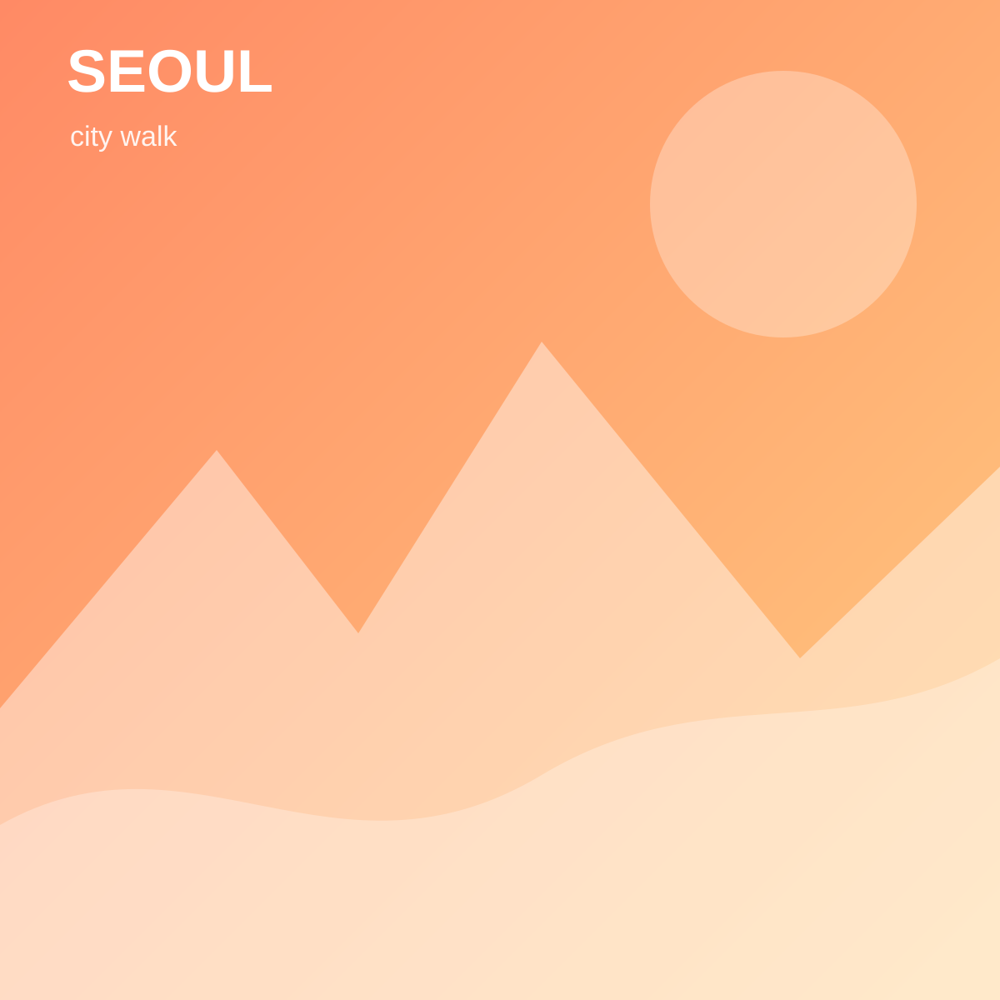

travel_ethan서울 · 2시간 전  좋아요 128개 travel_ethan 서울에서 교통비 포함 2만 원으로 하루 여행을 다녀왔습니다. #서울여행 #가성비여행 댓글 travel_sora 이동 동선이 정말 깔끔하네요. 다음 주에 따라가 볼게요! budget_min 망원시장 메뉴도 추천해 주세요. 게시

댓글
travel_sora 이동 동선이 정말 깔끔하네요. 다음 주에 따라가 볼게요!
budget_min 망원시장 메뉴도 추천해 주세요.